Interpolation & Naive Denoising
First we had to implement the "interpolator" equation we learned from class: \[ x_t = (1 - t)\,\epsilon + t\,x_1 \] This allows us to shift between pure noise (picked from a Gaussian) and our actual input image. Here my input image was a burrito I had at El Farolito in SF:
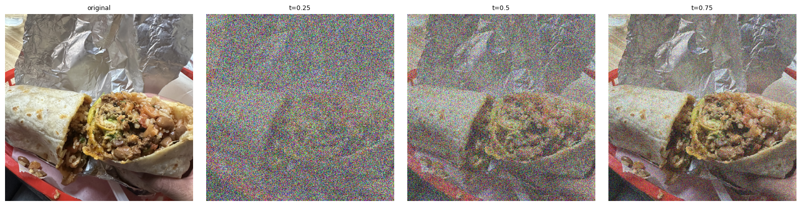
One of the naive approaches to denoising (and the classical way of doing it) is using a Gaussian blur. I implemented that first and here are the results:
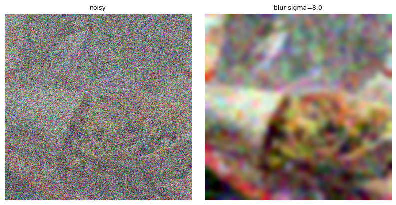
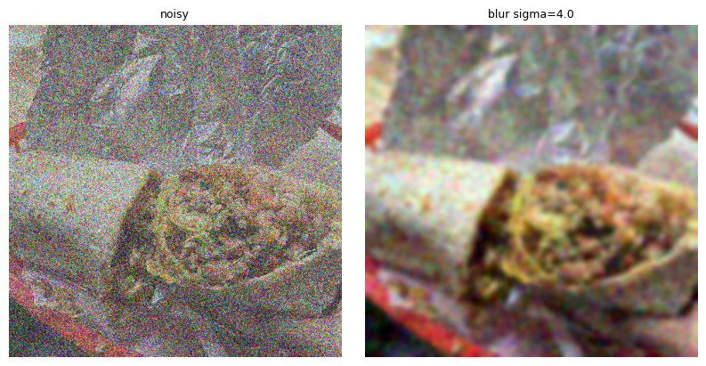
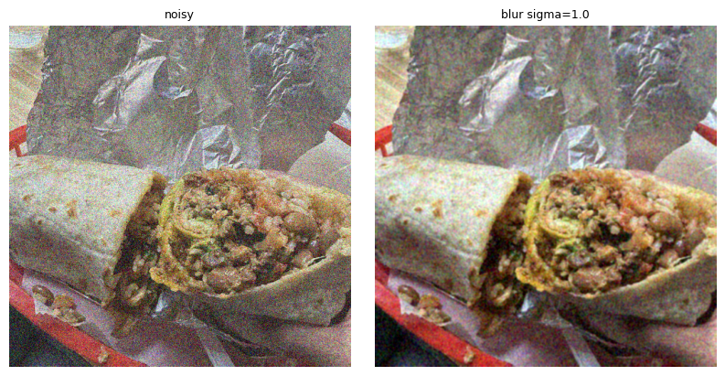
The lowest blur strength with the least noise (trivially) worked the best because there wasn't too much noise to begin with. We had to adjust blur radius to match noise levels, and especially noisy images were still considerably distorted.
That leads us to our next approach: one-step denoising. Basically, if we put the noise image and clean image in vector space (and add t as a dimension), we can predict the "velocity vector" from our current position to the clean image. We can calculate the clean image using that velocity.
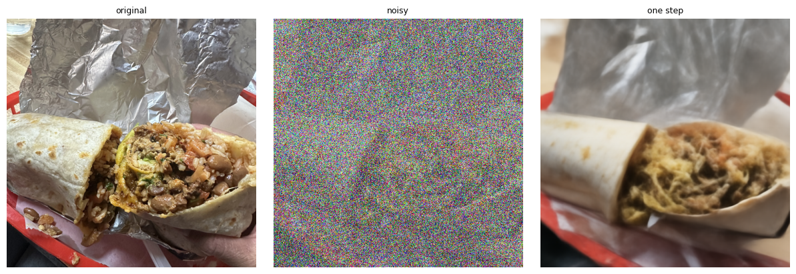
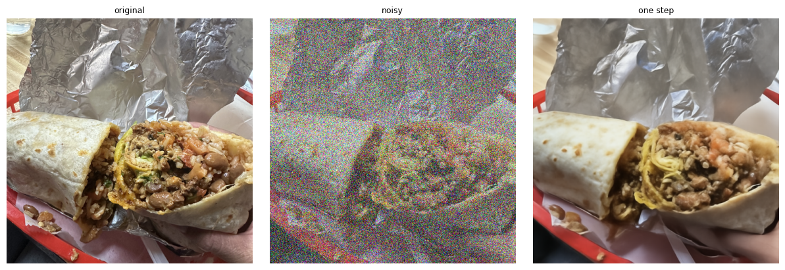
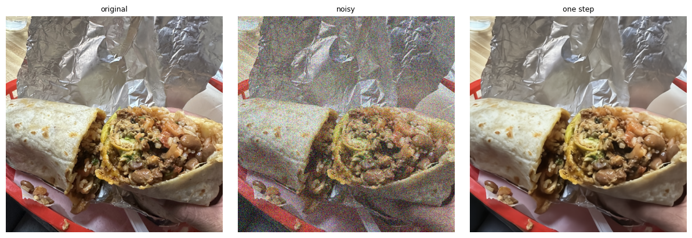
The result is a much less noisy image, although blur is leftover. The more noise, the more blurry the resulting image. We don't exactly have a way to "deblur" these images which is the issue.
Visualizing Velocity & Euler Sampling
To see what the model is actually doing in one-step denoising, we can visualize the velocity it predicts. The noise is where we start and the clean image is where we want to end up, so the ground-truth velocity is just the difference between the two: \[ v_{gt} = x_1 - \epsilon \] I compared the model's update \( (1 - t)\,\hat{v}_t \) to the ground-truth update \( (1 - t)\,v_{gt} \), with an error map showing the RMS difference over the RGB channels of each pixel. Here are the results:
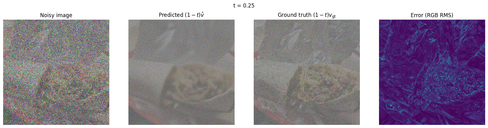
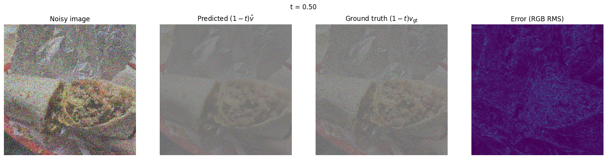
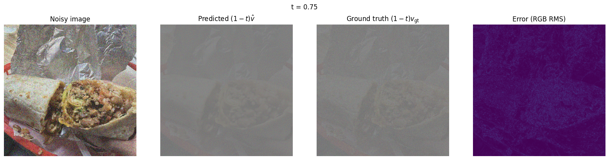
The error is largest when the image is least denoised, i.e. t is low.
Since one big jump leaves us with a blurry image, the fix is to take lots of small steps instead. With Euler sampling we step forward by \( h = 0.02 \) and predict a new velocity after every step: \[ x_{t+h} = x_t + h\,v_\theta(x_t, t) \] Starting from the \( t = 0.5 \) noisy burrito, here's the image every five steps:
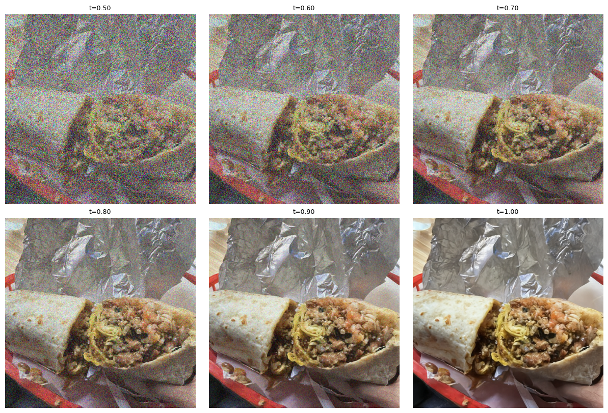
And here's how it stacks up against the other two approaches on the same noisy input:
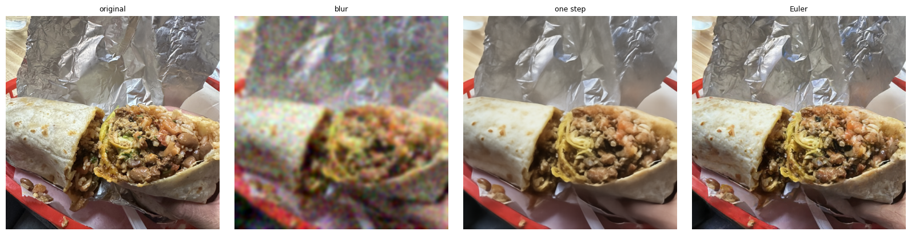
The resulting image has little (if any) noise and doesn't have the same blurring (now that I think about it, kind of vectorizing) effect that the one-step denoising had.
Basic Image Generation
If we start Euler sampling at pure noise (t=0), we can build new images from scratch; this is what we got from the notebook. Some faces and bodies are deformed or missing features which is a bit creepy...

Better Image Generation (CFG)
To get better images, we can use classifier-free guidance. Basically, we predict the velocity once with our prompt and another time with an empty prompt. The difference is how much the prompt changes the velocity, so we can scale w to push further in that direction. I used \( w = 7 \) and the same five starting noises, and we got similar people with imperfect but much less creepy looking faces:

Image-to-Image Generation
Cool! Now if we add the same noise to an image that already exists we can use CFG to "morph" between the generated noise and our image. This creates a trippy "transition image" between the two. A lower \( t_{start} \) means more initial noise and thus a more imaginary image. We ranged it from 0.02 to 0.5 for this project.

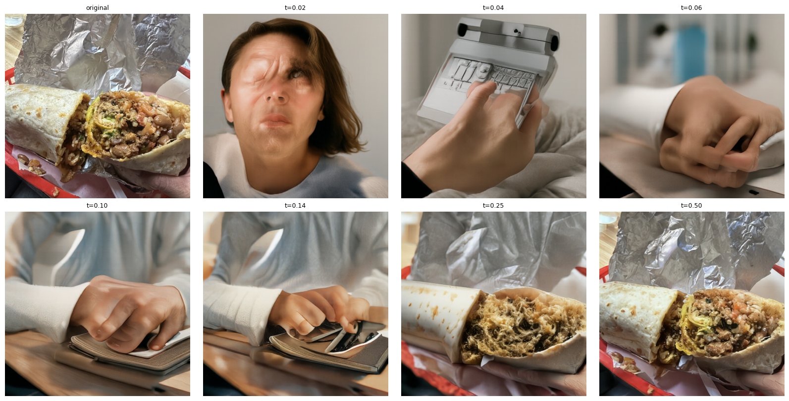
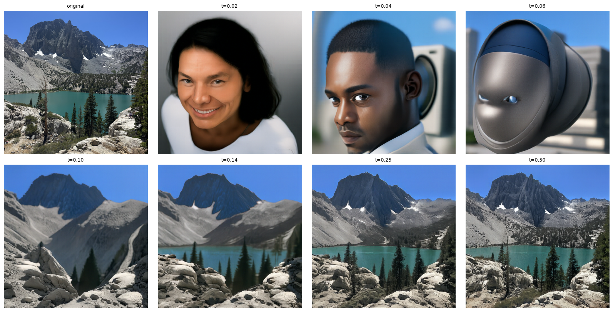
I tried it on a picture of the Eiffel Tower from the web:
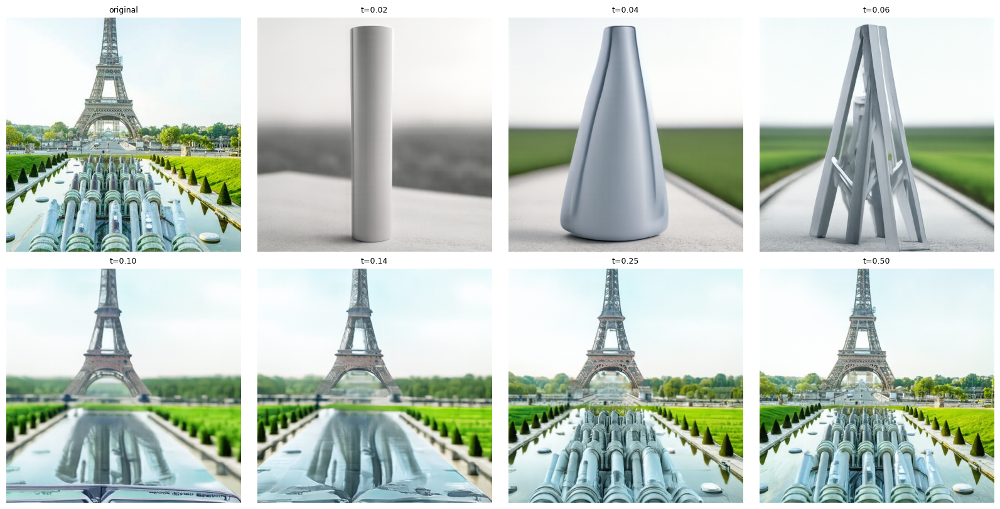
And also on images that I drew myself. As you can see, it actually works better on images that aren't fully realistic but rather hand-drawn:
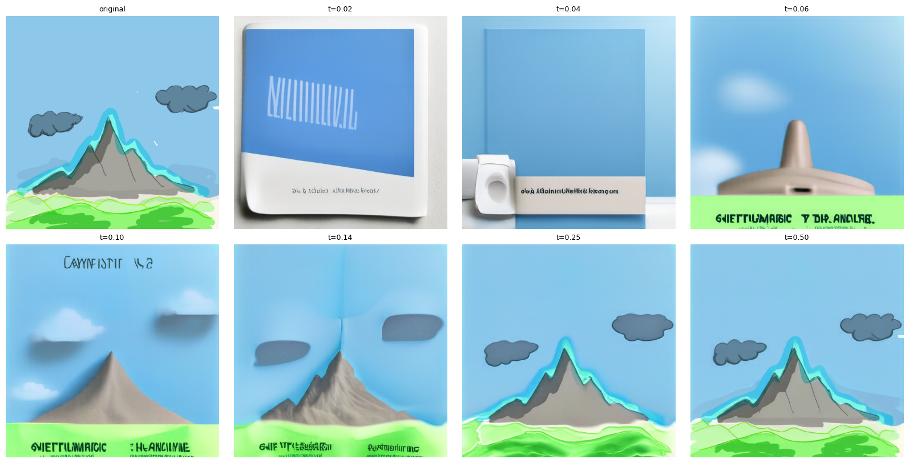
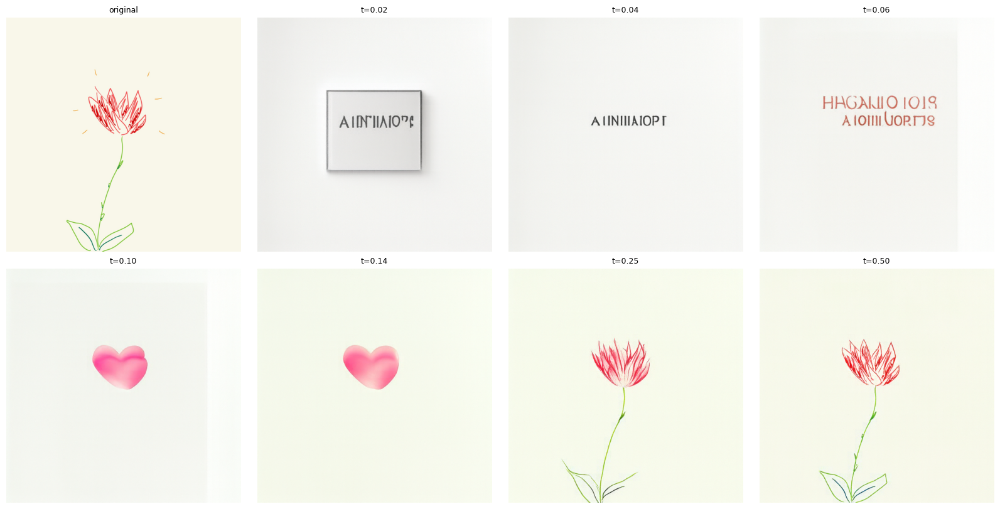
The start time is essentially an interpolator for how imaginary the resulting image is, versus how much it looks like our input image. It's less of a "cross dissolve" and more of a morphing between imaginary and reality.
Better Image-to-Image Generation
Now we include a prompt describing the edit we want (kind of like CFG!). \( t_{start} \) is now an interpolator between the version of this image influenced by the prompt and the original image. Here are a few example outputs:
"a photograph of a rocket on a launch pad"
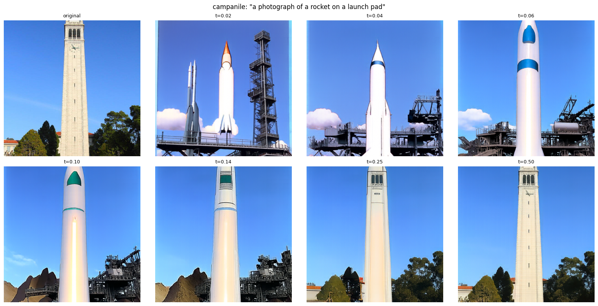
"turn the burrito into a sleeping pad in a tent"
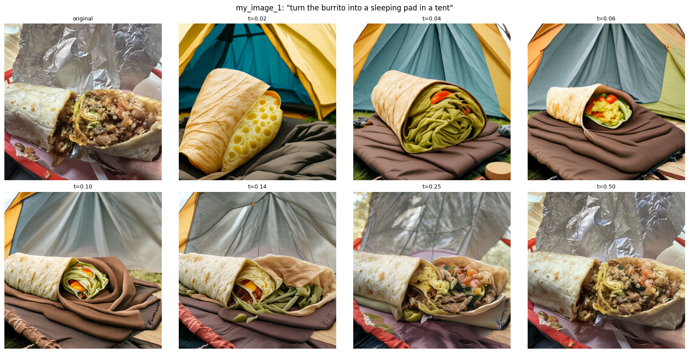
"turn the mountain into a purple volcano with a pool of purple lava beneath it"
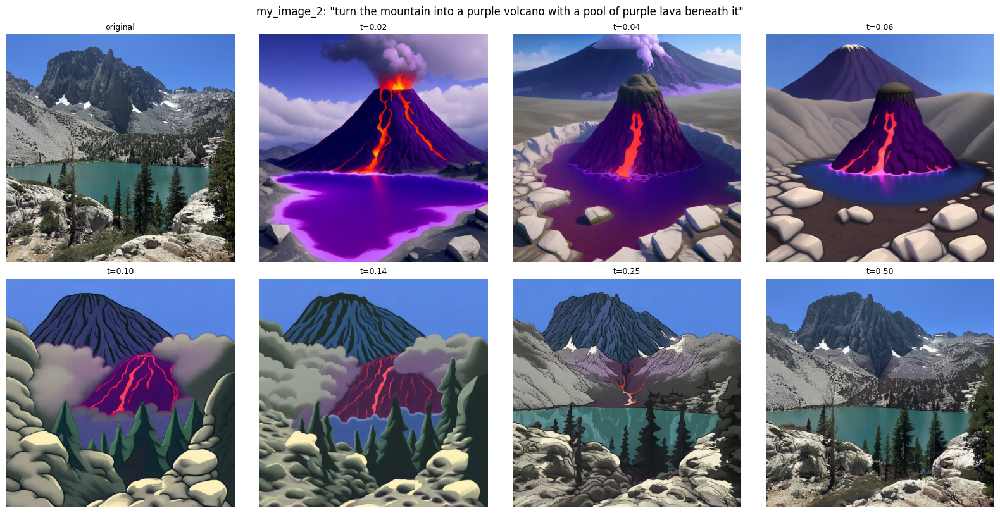
The start time is once again an interpolator between our imaginary and real version.
Application 1: Visual Anagrams
In lecture we saw images that looked like two different things upside-down versus upside-up! In this project we implemented this by applying one prompt, flipping the image and applying another prompt, then flipping the image back: \[ v = \tfrac{1}{2}\left(v_{cfg}(x_t, p_1) + F\big(v_{cfg}(F(x_t), p_2)\big)\right) \] Here are our results:
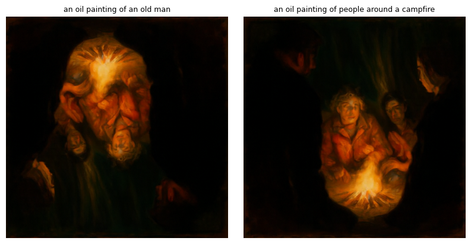
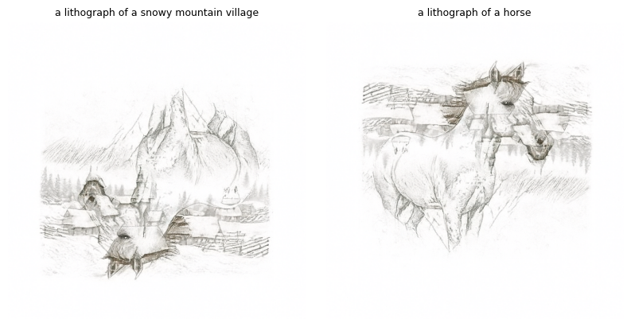
Application 2: Hybrid Images
In project 2, we made hybrid images by combining the low pass features of one with the high pass features of the other: \[ v = f_{\text{lowpass}}(v_1) + f_{\text{highpass}}(v_2) \] This created images that looked like one thing close up versus another far away. Here, we did the same with velocities instead of images:

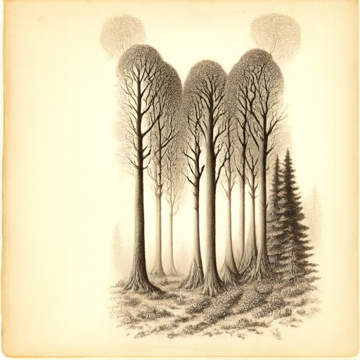
Building a Denoiser
For Part B we built our own model from scratch and trained it on MNIST digits! First up we had to build a UNet, which shrinks the 28×28 image down to 14×14, 7×7, then 1×1, and grows it back up. On the way up it concatenates the matching layer from the way down (skip connections), so it doesn't lose the details.
To train it as a denoiser we need noisy inputs, which we make by adding Gaussian noise to a clean digit: \[ z = x + \sigma\,\epsilon \] Here's one digit with the noise level ranging from 0.0 to 1.0:
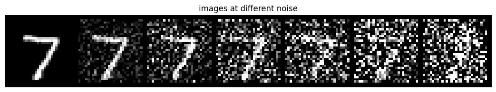
We set \( \sigma = 0.5 \) then trained it for 5 epochs. We had to generate new noise per batch so that the model could generalize to different noise. Here's a graph of our loss after each step:
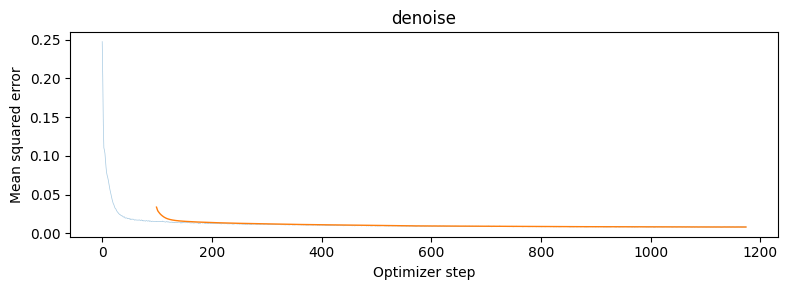
Here are the clean, noisy, and denoised digits (notice how more detail is preserved with more epochs):
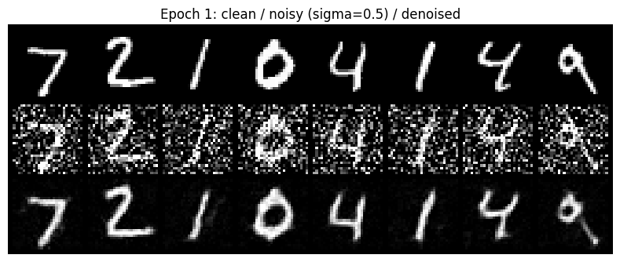
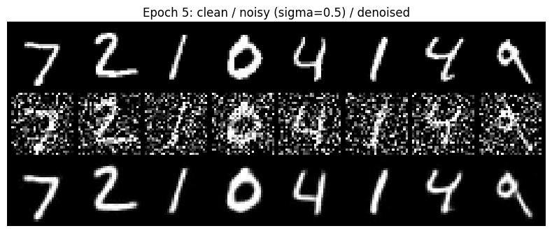
Testing the Denoiser's Limits
What happens with noise levels other than 0.5? The model preserves any extra noise as "smears" because it wasn't trained on it.
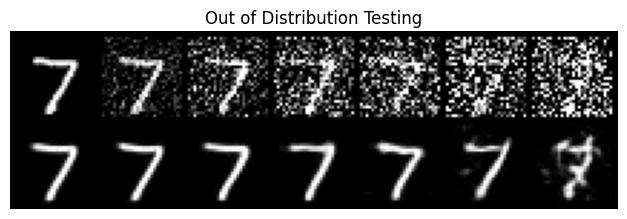
Now we test if a model can generate digits from pure noise, i.e. nothing...
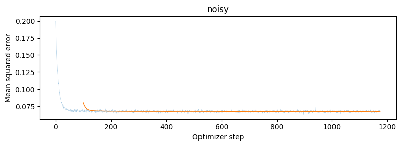
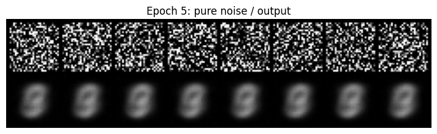
Our result is sort of an average of all the digits in the dataset. As discussed many times in class and discussion it's because this is what minimizes the MSE of L2 loss.
Flow Matching (Time-Conditioned)
Just like in Part A, we can take lots of small steps instead of one big step. In our time-conditioned approach, we mix a digit \( x_1 \) with noise \( x_0 \) at a random time \( t \) using the same interpolation equation from Part A and train the UNet to predict the conditional flow, i.e.: \[ x_1 - x_0 \] Since the model needs to know how far along it is, we feed \( t \) in through two small fully connected blocks that scale the UNet's middle layers. Here's the training loss over 10 epochs:
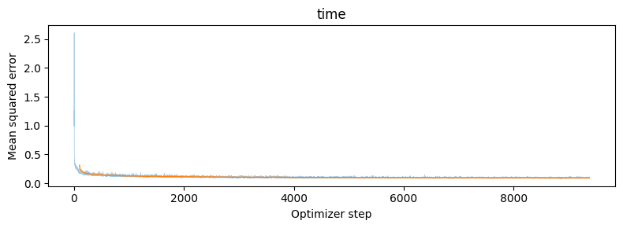
To generate, we start from pure noise and take Euler steps from \( t = 0 \) to 1, same as Part A. Here are samples after epochs 1, 5, and 10 (same starting noise each time):
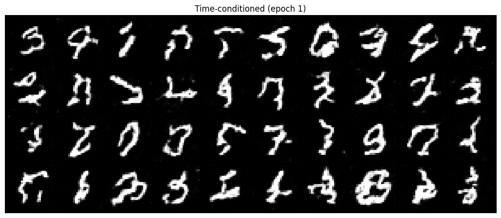
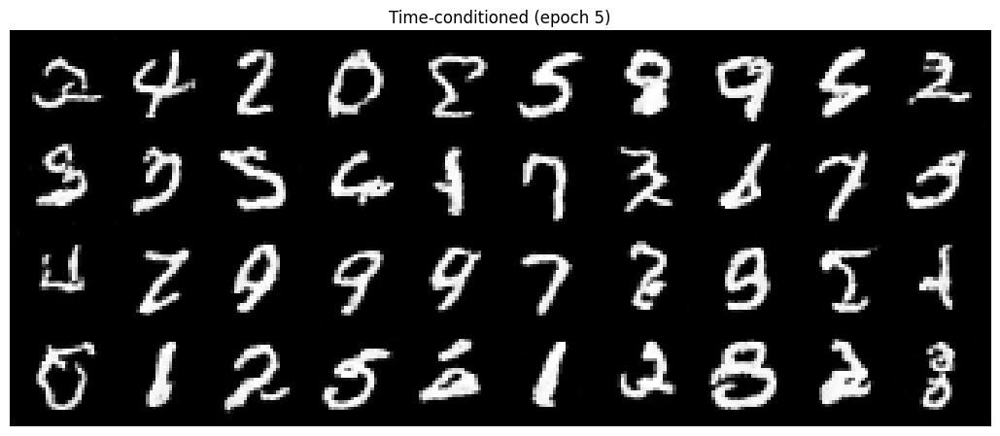
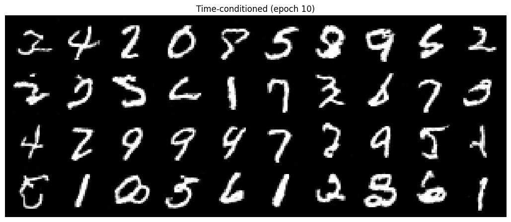
The samples kind of look like scrambled eggs with less epochs, then become more sophisticated digits.
Flow Matching (Class-Conditioned + CFG)
To control which digit we get, we also can use class conditioning + CFG (but we need to use one-hot encoding since digits are categories instead of amounts). \[ u = u_{\text{uncond}} + \gamma\,(u_{\text{cond}} - u_{\text{uncond}}) \] We do this with two more fully connected blocks, and also drop the class during training 10% of the time so the model trains on conditioned and unconditioned data. Here's the training loss:
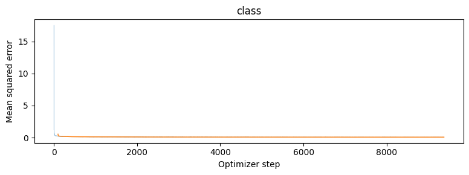
Here's class conditioned samples of each digit, each with \( \gamma = 5 \) and getting more clear after each epoch:
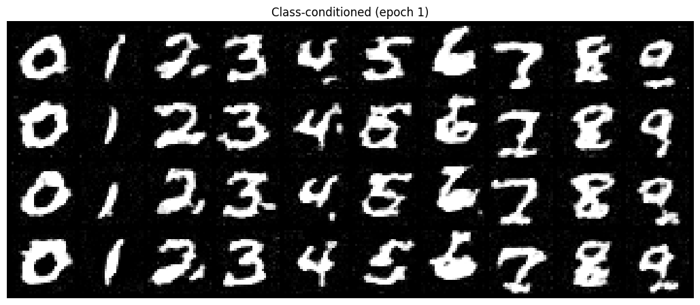
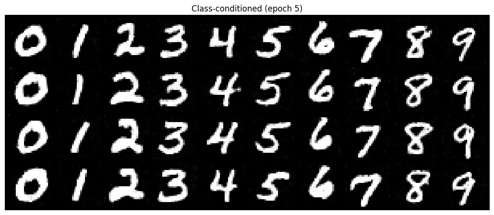
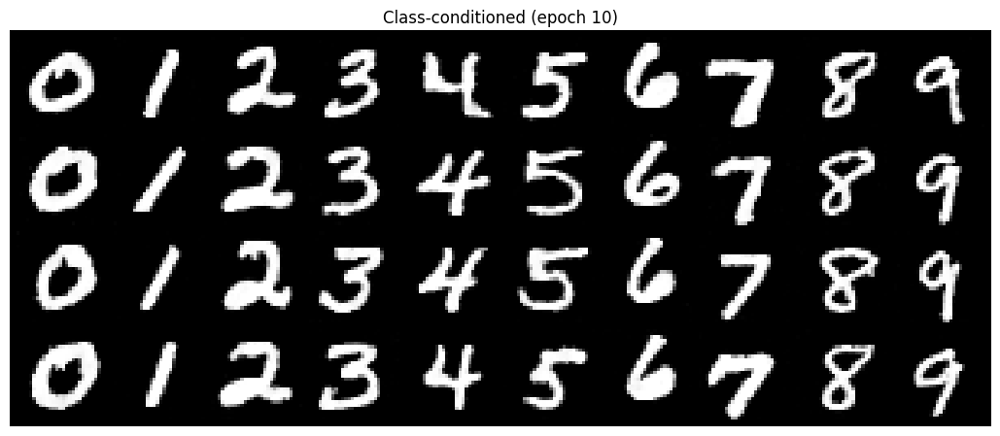
Why Don't We Need the Learning Rate Scheduler?
To see if we could drop the scheduler, I trained a model with a constant learning rate of 1e-3 (the scheduler's minimum) and compared the results. The only tradeoff is time because the model takes small steps at first during training but it works fine without it, and in fact the initial MSE was lower for the first epoch.
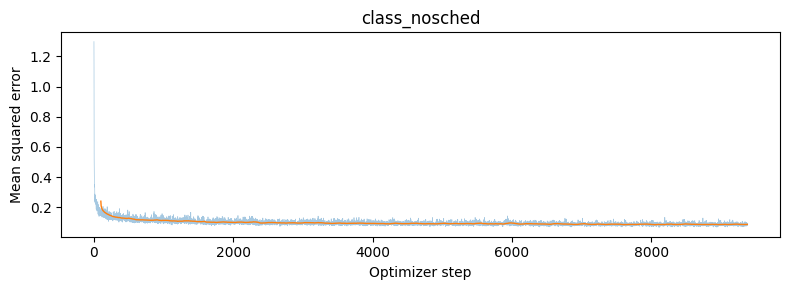
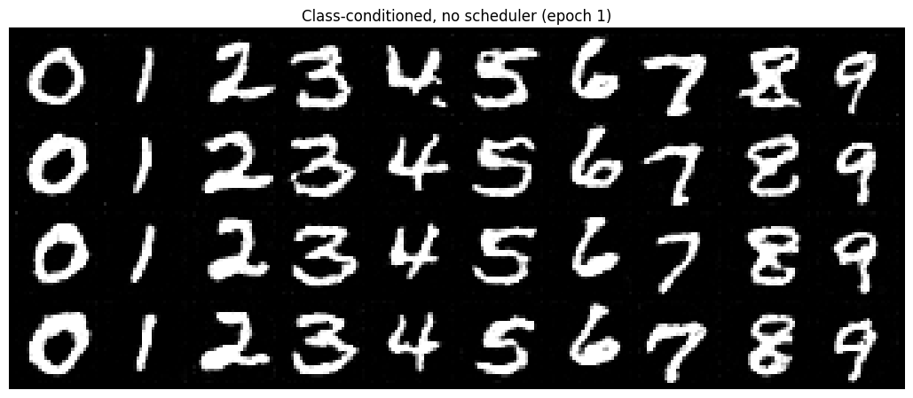
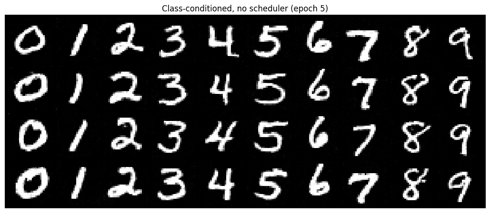
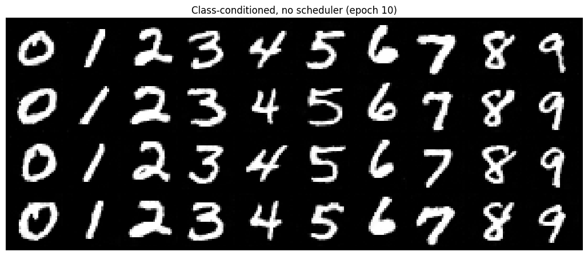